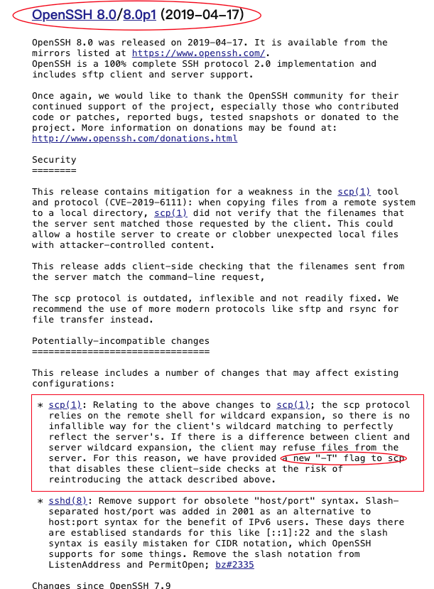

Rocky Linux 9.4 一键安装 Oracle 11GR2 RAC
大家好，这里是 Lucifer三思而后行，专注于提升数据库运维效率。
目录
前言
Oracle 一键安装脚本，演示 Rocky Linux 9.4 一键安装 Oracle 11GR2 RAC。
脚本下载：Oracle一键安装脚本
作者微信：Lucifer-0622
问题记录
昨天，群友反馈一键安装脚本在 Rocky Linux 9.4 一键安装 Oracle 11GR2 RAC 遇到问题了，互信之后依然遇到通信失败的报错：
Starting Oracle Universal Installer...
Checking Temp space: must be greater than 120 MB. Actual 83352 MB Passed
Checking swap space: must be greater than 150 MB. Actual 8183 MB Passed
Preparing to launch Oracle Universal Installer from /tmp/OraInstall2024-08-15_11-33-32AM. Please wait ...[FATAL] [INS-30132] Initial setup required for the execution of installer validations failed on nodes: rocky9-02
CAUSE: Indicated nodes were not reachable or failed to access the temporary location on the indicated nodes.
ACTION: Ensure that all the indicated nodes are reachable and current user has required permissions to access the temporary location on all the indicated nodes.
A log of this session is currently saved as: /tmp/OraInstall2024-08-15_11-33-32AM/installActions2024-08-15_11-33-32AM.log. Oracle recommends that if you want to keep this log, you should move it from the temporary location to a more permanent location.
由于确保互信是完全没有问题的，所以怀疑是 openssh 版本问题导致，但是因为脚本是处理过 openssh 适配的：
- 8.x 版本
+ -T - 9.x 版本
+ -T -O
按理说不会出现问题，查看 Rocky Linux 9.4 的 openssh 版本为：OpenSSH_8.7p1，脚本也确实进行了 + -T 处理，按理说没有问题才对。经过深入专研分析之后发现，其实 -O 选项是从 8.7 版本就已经出现的，因此从 8.7 版本开始就需要进行 + -T -O 处理，验证后确实如此：

后续，在建库时遇到了监听没有创建成功的问题，装 Grid 时后续创建监听报错：
[grid@rocky9-01:/u01/app/grid/cfgtoollogs/netca]$ cat netca_Ora11g_gridinfrahome1-2408152PM1111.log
...
...
Problem in configuration: PRCN-2061 : Failed to add listener LISTENER
PRCT-1011 : Failed to run "srvctl". Detailed error: [/bin/sh: which: line 1: syntax error: unexpected end of file, /bin/sh: error importing function definition for `which']
## 监听报错
[grid@rocky9-01:/home/grid]$ lsnrctl stat
LSNRCTL for Linux: Version 11.2.0.4.0 - Production on 15-AUG-2024 14:26:25
Copyright (c) 1991, 2013, Oracle. All rights reserved.
Connecting to (ADDRESS=(PROTOCOL=tcp)(HOST=)(PORT=1521))
TNS-12541: TNS:no listener
TNS-12560: TNS:protocol adapter error
TNS-00511: No listener
Linux Error: 111: Connection refused
[grid@rocky9-01:/home/grid]$ lsnrctl start
LSNRCTL for Linux: Version 11.2.0.4.0 - Production on 15-AUG-2024 14:26:30
Copyright (c) 1991, 2013, Oracle. All rights reserved.
Starting /u01/app/11.2.0/grid/bin/tnslsnr: please wait...
TNSLSNR for Linux: Version 11.2.0.4.0 - Production
System parameter file is /u01/app/11.2.0/grid/network/admin/listener.ora
Log messages written to /u01/app/grid/diag/tnslsnr/rocky9-01/listener/alert/log.xml
Error listening on: (ADDRESS=(PROTOCOL=tcp)(HOST=)(PORT=1521))
TNS-12542: TNS:address already in use
TNS-12560: TNS:protocol adapter error
TNS-00512: Address already in use
Linux Error: 98: Address already in use
Listener failed to start. See the error message(s) above...
解决方案可参考：Errors while running shell scripts: /bin/sh: error importing function definition for `which’
经过以上修复之后，测试脚本进行一键安装成功，没有问题。
安装准备
- 1、系统组所有节点均安装好操作系统（支持最小化安装）
- 2、网络组所有节点均配置好主机网络，至少需要一组公网 IP 地址和一组心跳 IP 地址
- 3、存储组所有节点均配置并在主机层挂载好 ASM 磁盘，至少需要一组 OCR 和 DATA 磁盘组，虚拟化环境需要确保已开启磁盘的 UUID
- 4、DBA 只需要在主节点创建软件目录：
mkdir /soft - 5、DBA 只需要在主节点上传 Oracle 安装介质（基础包，补丁包）到 /soft 目录下，其他节点无需任何操作
- 6、DBA 只需要在主节点上传 Oracle 一键安装脚本到 /soft 目录下，授予脚本执行权限：
chmod +x OracleshellInstall - 7、DBA 所有节点均挂载主机 ISO 镜像，这里只需要 mount 上即可（这个很简单，不了解的可以百度下）
- 8、根据脚本安装脚本以及实际情况，配置好脚本的安装参数，在主节点的 /soft 目录下执行一键安装即可。
环境信息
# 主机版本
## 节点一
[root@rocky9-01 ~]# cat /etc/os-release
NAME="Rocky Linux"
VERSION="9.4 (Blue Onyx)"
ID="rocky"
ID_LIKE="rhel centos fedora"
VERSION_ID="9.4"
PLATFORM_ID="platform:el9"
PRETTY_NAME="Rocky Linux 9.4 (Blue Onyx)"
ANSI_COLOR="0;32"
LOGO="fedora-logo-icon"
CPE_NAME="cpe:/o:rocky:rocky:9::baseos"
HOME_URL="https://rockylinux.org/"
BUG_REPORT_URL="https://bugs.rockylinux.org/"
SUPPORT_END="2032-05-31"
ROCKY_SUPPORT_PRODUCT="Rocky-Linux-9"
ROCKY_SUPPORT_PRODUCT_VERSION="9.4"
REDHAT_SUPPORT_PRODUCT="Rocky Linux"
REDHAT_SUPPORT_PRODUCT_VERSION="9.4"
## 节点二
[root@rocky9-02 ~]# cat /etc/os-release
NAME="Rocky Linux"
VERSION="9.4 (Blue Onyx)"
ID="rocky"
ID_LIKE="rhel centos fedora"
VERSION_ID="9.4"
PLATFORM_ID="platform:el9"
PRETTY_NAME="Rocky Linux 9.4 (Blue Onyx)"
ANSI_COLOR="0;32"
LOGO="fedora-logo-icon"
CPE_NAME="cpe:/o:rocky:rocky:9::baseos"
HOME_URL="https://rockylinux.org/"
BUG_REPORT_URL="https://bugs.rockylinux.org/"
SUPPORT_END="2032-05-31"
ROCKY_SUPPORT_PRODUCT="Rocky-Linux-9"
ROCKY_SUPPORT_PRODUCT_VERSION="9.4"
REDHAT_SUPPORT_PRODUCT="Rocky Linux"
REDHAT_SUPPORT_PRODUCT_VERSION="9.4"
# 网络信息
## 节点一
[root@rocky9-01 ~]# ip a
2: ens33: <BROADCAST,MULTICAST,UP,LOWER_UP> mtu 1500 qdisc fq_codel state UP group default qlen 1000
link/ether 00:0c:29:fc:04:99 brd ff:ff:ff:ff:ff:ff
altname enp2s1
inet 192.168.6.160/24 brd 192.168.6.255 scope global noprefixroute ens33
valid_lft forever preferred_lft forever
inet6 fe80::20c:29ff:fefc:499/64 scope link noprefixroute
valid_lft forever preferred_lft forever
3: ens34: <BROADCAST,MULTICAST,UP,LOWER_UP> mtu 1500 qdisc fq_codel state UP group default qlen 1000
link/ether 00:0c:29:fc:04:a3 brd ff:ff:ff:ff:ff:ff
altname enp2s2
inet 1.1.1.1/24 brd 1.1.1.255 scope global noprefixroute ens34
valid_lft forever preferred_lft forever
inet6 fe80::20c:29ff:fefc:4a3/64 scope link noprefixroute
valid_lft forever preferred_lft forever
## 节点二
[root@rocky9-02 ~]# ip a
2: ens33: <BROADCAST,MULTICAST,UP,LOWER_UP> mtu 1500 qdisc fq_codel state UP group default qlen 1000
link/ether 00:0c:29:f4:56:8d brd ff:ff:ff:ff:ff:ff
altname enp2s1
inet 192.168.6.161/24 brd 192.168.6.255 scope global noprefixroute ens33
valid_lft forever preferred_lft forever
inet6 fe80::20c:29ff:fef4:568d/64 scope link noprefixroute
valid_lft forever preferred_lft forever
3: ens34: <BROADCAST,MULTICAST,UP,LOWER_UP> mtu 1500 qdisc fq_codel state UP group default qlen 1000
link/ether 00:0c:29:f4:56:97 brd ff:ff:ff:ff:ff:ff
altname enp2s2
inet 1.1.1.2/24 brd 1.1.1.255 scope global noprefixroute ens34
valid_lft forever preferred_lft forever
inet6 fe80::20c:29ff:fef4:5697/64 scope link noprefixroute
valid_lft forever preferred_lft forever
# 挂载本地 ISO 镜像
## 节点一
[root@rocky9-01 ~]# mount /dev/cdrom /mnt/
mount: /mnt: WARNING: source write-protected, mounted read-only.
[root@rocky9-01 ~]# mount | grep iso9660 | grep -v "/run/media"
/dev/sr0 on /mnt type iso9660 (ro,relatime,nojoliet,check=s,map=n,blocksize=2048)
[root@rocky9-01 ~]# df -h|grep /mnt
/dev/sr0 11G 11G 0 100% /mnt
## 节点二
[root@rocky9-02 ~]# mount /dev/cdrom /mnt/
mount: /mnt: WARNING: source write-protected, mounted read-only.
[root@rocky9-02 ~]# mount | grep iso9660 | grep -v "/run/media"
/dev/sr0 on /mnt type iso9660 (ro,relatime,nojoliet,check=s,map=n,blocksize=2048)
[root@rocky9-02 ~]# df -h|grep /mnt
/dev/sr0 11G 11G 0 100% /mnt
# 两节点均需执行，配置本地软件源(为了安装 iscsi，不需要使用 starwind 挂载共享存储可以不配置)
mkdir -p /etc/yum.repos.d/bak
mv /etc/yum.repos.d/* /etc/yum.repos.d/bak
cat<<-EOF>/etc/yum.repos.d/local.repo
[BaseOS]
name=BaseOS
baseurl=file:///mnt/BaseOS
enabled=1
gpgcheck=0
[AppStream]
name=AppStream
baseurl=file:///mnt/AppStream
enabled=1
gpgcheck=0
EOF
# 两节点均需执行，Starwind 共享磁盘挂载（有存储就不需要使用 starwind，直接存储上划盘挂载就可）
yum install -y iscsi-initiator-utils*
systemctl start iscsid.service
systemctl enable iscsid.service
iscsiadm -m discovery -t st -p 192.168.6.188
## 挂载 ASM 磁盘
iscsiadm -m node -T iqn.2008-08.com.starwindsoftware:192.168.6.188-lucifer -p 192.168.6.188 -l
## 配置开机自动挂载
iscsiadm -m node -T iqn.2008-08.com.starwindsoftware:192.168.6.188-lucifer -p 192.168.6.188 --op update -n node.startup -v automatic
## 节点一
[root@rocky9-01 ~]# lsblk
NAME MAJ:MIN RM SIZE RO TYPE MOUNTPOINTS
sda 8:0 0 100G 0 disk
├─sda1 8:1 0 1G 0 part /boot
└─sda2 8:2 0 99G 0 part
├─rl-root 253:0 0 91G 0 lvm /
└─rl-swap 253:1 0 8G 0 lvm [SWAP]
sdb 8:16 0 50G 0 disk
sdc 8:32 0 20G 0 disk
sr0 11:0 1 10.2G 0 rom /mnt
## 节点二
[root@rocky9-02 ~]# lsblk
NAME MAJ:MIN RM SIZE RO TYPE MOUNTPOINTS
sda 8:0 0 100G 0 disk
├─sda1 8:1 0 1G 0 part /boot
└─sda2 8:2 0 99G 0 part
├─rl-root 253:0 0 91G 0 lvm /
└─rl-swap 253:1 0 8G 0 lvm [SWAP]
sdb 8:16 0 50G 0 disk
sdc 8:32 0 20G 0 disk
sr0 11:0 1 10.2G 0 rom /mnt
# 安装包存放在 /soft 目录下
[root@rocky9-01 soft]# ll
-rw-r--r--. 1 root root 237200 Aug 15 10:24 OracleShellInstall
-rwx------. 1 root root 1395582860 Aug 15 10:25 p13390677_112040_Linux-x86-64_1of7.zip
-rwx------. 1 root root 1151304589 Aug 15 10:25 p13390677_112040_Linux-x86-64_2of7.zip
-rwx------. 1 root root 1205251894 Aug 15 10:25 p13390677_112040_Linux-x86-64_3of7.zip
-rwx------. 1 root root 174911877 Aug 15 10:25 p18370031_112040_Linux-x86-64.zip
-rwx------. 1 root root 321590 Aug 15 10:25 rlwrap-0.44.tar.gz
确保安装环境准备完成后，即可执行一键安装。
安装命令
使用标准生产环境安装参数（安装过程若失败，脚本支持重复执行安装）：
# 根据脚本 README 或者 -h 命令提示，编辑好一键安装命令，进入 /soft 目录执行安装：
[root@rocky9-01 ~]# cd /soft/
[root@rocky9-01 soft]# chmod +x OracleShellInstall
./OracleShellInstall -n rocky9 `# RAC 主机名前缀`\
-hn rocky9-01,rocky9-02 `# RAC 主机名`\
-cn rocky9-cls `# RAC 集群名称`\
-sn rocky9-scan `# RAC SCAN 名称`\
-rp oracle `# 主机 root 用户密码`\
-lf ens33 `# 主机网卡名称`\
-pf ens34 `# 主机心跳网卡名称`\
-ri 192.168.6.160,192.168.6.161 `# RAC 公网 IP`\
-vi 192.168.6.162,192.168.6.163 `# RAC 虚拟 IP`\
-si 192.168.6.165 `# RAC SCAN IP`\
-od /dev/sdb `# OCR 磁盘盘符名称`\
-dd /dev/sdc `# DATA 磁盘盘符名称`\
-o lucifer `# 数据库名称`\
-dp 'Passw0rd#PST' `# sys/system 用户密码`\
-ds AL32UTF8 `# 数据库字符集`\
-ns AL16UTF16 `# 国家字符集`\
-redo 100 `# 在线重做日志大小（M）`\
-opd Y `# 是否优化数据库`
安装过程
███████ ██ ████████ ██ ██ ██ ██ ██ ██ ██
██░░░░░██ ░██ ██░░░░░░ ░██ ░██ ░██░██ ░██ ░██ ░██
██ ░░██ ██████ ██████ █████ ░██ █████ ░██ ░██ █████ ░██ ░██░██ ███████ ██████ ██████ ██████ ░██ ░██
░██ ░██░░██░░█ ░░░░░░██ ██░░░██ ░██ ██░░░██░█████████░██████ ██░░░██ ░██ ░██░██░░██░░░██ ██░░░░ ░░░██░ ░░░░░░██ ░██ ░██
░██ ░██ ░██ ░ ███████ ░██ ░░ ░██░███████░░░░░░░░██░██░░░██░███████ ░██ ░██░██ ░██ ░██░░█████ ░██ ███████ ░██ ░██
░░██ ██ ░██ ██░░░░██ ░██ ██ ░██░██░░░░ ░██░██ ░██░██░░░░ ░██ ░██░██ ░██ ░██ ░░░░░██ ░██ ██░░░░██ ░██ ░██
░░███████ ░███ ░░████████░░█████ ███░░██████ ████████ ░██ ░██░░██████ ███ ███░██ ███ ░██ ██████ ░░██ ░░████████ ███ ███
░░░░░░░ ░░░ ░░░░░░░░ ░░░░░ ░░░ ░░░░░░ ░░░░░░░░ ░░ ░░ ░░░░░░ ░░░ ░░░ ░░ ░░░ ░░ ░░░░░░ ░░ ░░░░░░░░ ░░░ ░░░
注意：本脚本仅用于新服务器上实施部署数据库使用，严禁在已运行数据库的主机上执行，以免发生数据丢失或者损坏，造成不可挽回的损失！！！
请选择安装模式 [单机(si)/单机ASM(sa)/集群(rac)] : rac
数据库安装模式: rac
请选择数据库版本 [11/12/19/21/23] : 11
数据库版本: 11
!!! 免责声明：当前操作系统版本是 [ Rocky Linux 9.4 (Blue Onyx) ] 不在 Oracle 官方支持列表，本脚本只负责安装，请确认是否继续安装 (Y/N): [Y]
检查 ASM 磁盘 [ /dev/sdb ] 中已存在磁盘组名称 [ OCR ] 信息，请确认是否格式化磁盘 (Y/N): [Y]
检查 ASM 磁盘 [ /dev/sdc ] 中已存在磁盘组名称 [ DATA ] 信息，请确认是否格式化磁盘 (Y/N): [Y]
OracleShellInstall 开始安装，详细安装过程可查看日志： tail -2000f /soft/print_shell_install_20240815155940.log
正在进行安装前检查，请稍等......
正在检测安装包 /soft/p13390677_112040_Linux-x86-64_3of7.zip 的 MD5 值是否正确，请稍等......
正在检测安装包 /soft/p13390677_112040_Linux-x86-64_1of7.zip 的 MD5 值是否正确，请稍等......
正在检测安装包 /soft/p13390677_112040_Linux-x86-64_2of7.zip 的 MD5 值是否正确，请稍等......
正在检测安装包 /soft/p18370031_112040_Linux-x86-64.zip 的 MD5 值是否正确，请稍等......
正在配置本地软件源......已完成 (耗时: 1 秒)
配置 root 用户互信......已完成 (耗时: 6 秒)
正在检查并更新 RAC 主机时间......已完成 (耗时: 1 秒)
正在获取操作系统信息......已完成 (耗时: 1 秒)
正在安装依赖包......已完成 (耗时: 89 秒)
正在禁用防火墙......已完成 (耗时: 1 秒)
正在禁用 selinux......已完成 (耗时: 1 秒)
正在配置 nsyctl......已完成 (耗时: 0 秒)
正在配置主机名和 hosts 文件......已完成 (耗时: 0 秒)
正在创建用户和组......已完成 (耗时: 3 秒)
正在创建安装目录......已完成 (耗时: 0 秒)
正在配置透明大页 && NUMA && 磁盘 IO 调度器......已完成 (耗时: 2 秒)
正在配置操作系统参数 sysctl......已完成 (耗时: 0 秒)
正在配置 RemoveIPC......已完成 (耗时: 1 秒)
正在配置用户限制 limit......已完成 (耗时: 0 秒)
正在配置 shm 目录......已完成 (耗时: 0 秒)
正在安装 rlwrap 插件......已完成 (耗时: 13 秒)
正在配置用户环境变量......已完成 (耗时: 1 秒)
正在配置 RAC 其他节点信息......已完成 (耗时: 121 秒)
正在配置 RAC 所有节点互信......已完成 (耗时: 13 秒)
正在解压 Grid 安装包以及补丁......已完成 (耗时: 28 秒)
正在解压 Oracle 软件以及补丁......已完成 (耗时: 25 秒)
正在安装 Grid 软件以及补丁......已完成 (耗时: 1362 秒)
正在创建 ASM 磁盘组......已完成 (耗时: 17 秒)
正在安装 Oracle 软件以及补丁......已完成 (耗时: 579 秒)
正在创建数据库......已完成 (耗时: 404 秒)
正在优化数据库......已完成 (耗时: 62 秒)
恭喜！Oracle 一键安装执行完成 (耗时: 2760 秒)，现在是否重启主机：[Y/N] Y
正在重启节点 192.168.6.161 主机......
正在重启当前节点主机......
连接测试
查看系统版本：
[root@rocky9-01:/root]# cat /etc/os-release
NAME="Rocky Linux"
VERSION="9.4 (Blue Onyx)"
ID="rocky"
ID_LIKE="rhel centos fedora"
VERSION_ID="9.4"
PLATFORM_ID="platform:el9"
PRETTY_NAME="Rocky Linux 9.4 (Blue Onyx)"
ANSI_COLOR="0;32"
LOGO="fedora-logo-icon"
CPE_NAME="cpe:/o:rocky:rocky:9::baseos"
HOME_URL="https://rockylinux.org/"
BUG_REPORT_URL="https://bugs.rockylinux.org/"
SUPPORT_END="2032-05-31"
ROCKY_SUPPORT_PRODUCT="Rocky-Linux-9"
ROCKY_SUPPORT_PRODUCT_VERSION="9.4"
REDHAT_SUPPORT_PRODUCT="Rocky Linux"
REDHAT_SUPPORT_PRODUCT_VERSION="9.4"
查看 Grid 版本以及补丁：
[grid@rocky9-01:/home/grid]$ sqlplus -v SQL*Plus: Release 11.2.0.4.0 Production [grid@rocky9-01:/home/grid]$ opatch lspatches 18370031;Grid Infrastructure Patch Set Update : 11.2.0.4.x (gibugno)
查看集群：
[grid@rocky9-01:/home/grid]$ crsctl stat res -t
--------------------------------------------------------------------------------
NAME TARGET STATE SERVER STATE_DETAILS
--------------------------------------------------------------------------------
Local Resources
--------------------------------------------------------------------------------
ora.DATA.dg
ONLINE ONLINE rocky9-01
ONLINE ONLINE rocky9-02
ora.LISTENER.lsnr
ONLINE ONLINE rocky9-01
ONLINE ONLINE rocky9-02
ora.OCR.dg
ONLINE ONLINE rocky9-01
ONLINE ONLINE rocky9-02
ora.asm
ONLINE ONLINE rocky9-01 Started
ONLINE ONLINE rocky9-02 Started
ora.gsd
OFFLINE OFFLINE rocky9-01
OFFLINE OFFLINE rocky9-02
ora.net1.network
ONLINE ONLINE rocky9-01
ONLINE ONLINE rocky9-02
ora.ons
ONLINE ONLINE rocky9-01
ONLINE ONLINE rocky9-02
--------------------------------------------------------------------------------
Cluster Resources
--------------------------------------------------------------------------------
ora.LISTENER_SCAN1.lsnr
1 ONLINE ONLINE rocky9-01
ora.cvu
1 ONLINE ONLINE rocky9-02
ora.lucifer.db
1 ONLINE ONLINE rocky9-01 Open
2 ONLINE ONLINE rocky9-02 Open
ora.oc4j
1 ONLINE ONLINE rocky9-02
ora.rocky9-01.vip
1 ONLINE ONLINE rocky9-01
ora.rocky9-02.vip
1 ONLINE ONLINE rocky9-02
ora.scan1.vip
1 ONLINE ONLINE rocky9-01
查看 ASM 磁盘组：
[grid@rocky9-01:/home/grid]$ asmcmd lsdg State Type Rebal Sector Block AU Total_MB Free_MB Req_mir_free_MB Usable_file_MB Offline_disks Voting_files Name MOUNTED EXTERN N 512 4096 1048576 20480 16080 0 16080 0 N DATA/ MOUNTED EXTERN N 512 4096 1048576 51200 50804 0 50804 0 Y OCR/
查看 Oracle 版本以及补丁：
[oracle@rocky9-01:/home/oracle]$ sqlplus -v
SQL*Plus: Release 11.2.0.4.0 Production
[oracle@rocky9-01:/home/oracle]$ opatch lspatches
There are no Interim patches installed in this Oracle Home.
连接数据库：
[oracle@rocky9-01:/home/oracle]$ sas
SQL*Plus: Release 11.2.0.4.0 Production on Thu Aug 15 17:02:21 2024
Copyright (c) 1982, 2013, Oracle. All rights reserved.
Connected to:
Oracle Database 11g Enterprise Edition Release 11.2.0.4.0 - 64bit Production
With the Partitioning, Real Application Clusters, Automatic Storage Management, OLAP,
Data Mining and Real Application Testing options
sys@LUCIFER 2024-08-15 17:02:21> show parameter name
NAME TYPE VALUE
------------------------------------ ----------- ------------------------------
cell_offloadgroup_name string
db_file_name_convert string
db_name string lucifer
db_unique_name string lucifer
global_names boolean FALSE
instance_name string lucifer1
lock_name_space string
log_file_name_convert string
processor_group_name string
service_names string lucifer
sys@LUCIFER 2024-08-15 17:02:26> select instance_name,status from gv$instance;
INSTANCE_NAME STATUS
---------------- ------------
lucifer1 OPEN
lucifer2 OPEN
数据库连接正常。
往期精彩文章推荐
一篇文章让你彻底掌握 Shell 🔥
Oracle 一键巡检自动生成 Word 报告 🔥
Oracle一键安装脚本的 21 个疑问与解答 🔥
Oracle一键巡检脚本的 21 个疑问与解答 🔥
全网首发：Oracle 23ai 一键安装脚本 🔥
Oracle 19C 最新 RU 补丁 19.24 ，一键安装！ 🔥
Oracle Linux 6 一键安装 Oracle 11GR2 RAC
Oracle Linux 7.9 一键安装 Oracle 19C
Oracle Linux 8.9 一键安装 Oracle 19C RAC
Oracle Linux 9.4(aarch64) 一键安装 Oracle 19C 🔥
openEuler 20.03 LTS SP4 一键安装 Oracle 19C 🔥
openEuler 22.03 LTS SP4 一键安装 Oracle 19C RAC
RHEL 7.9 一键安装 Oracle 19C 19.23 RAC
Redhat 8.4 一键安装 Oracle 11GR2
RedHat 9.4(aarch64) 一键安装 Oracle 19C
龙蜥 Anolis 7.9 一键安装 Oracle 19C 19.23
龙蜥 Anolis OS 8.8 一键安装 Oracle 19C
SUSE 15 SP5 一键安装 Oracle 19C
统信 UOS V20 1070(a) 一键安装 Oracle 11GR2
Ubuntu 22.04 一键安装 Oracle 19C
Ubuntu 14.04 一键安装 Oracle 19C
银河麒麟 Kylin V10 SP3 一键安装 Oracle 19C 🔥
银河麒麟 Kylin V10 SP3 一键安装 Oracle 11GR2 RAC
Oracle DataGuard GAP 修复手册 🔥
优化 Oracle：最佳实践与开发规范
DBA 必备：Linux 软件源配置全攻略 🔥
Linux 一键配置时钟同步全攻略 🔥
Starwind 配置 ISCSI 共享存储
SUSE 15 SP3 安装 Oracle 19C RAC 数据库
达梦 8 数据库安装手册 🔥
Oracle 12CR2 RAC 安装避坑宝典
Linux7 安装 Oracle 19C RAC 详细图文教程 🔥
Oracle ADG 搭建 RAC to Single 详细教程
Oracle DataGuard GAP 修复手册 🔥
Oracle 分区表之在线重定义
AutoUpgrade 快速升级 Oracle 数据库
Oracle 数据库巡检命令手册 🔥
Oracle 数据坏块的 N 种修复方式 🔥
数据库 SQL 开发入门教程
超全 Linux 基础命令总结 🔥
VMware 虚拟机安装 Linux 系统
Linux 安装 MySQL 详细教程
教你玩转 SQLPLUS，工作效率提升 200%
感谢您的阅读，这里是 Lucifer三思而后行，欢迎 点赞+关注，我会持续分享数据库知识、运维技巧。